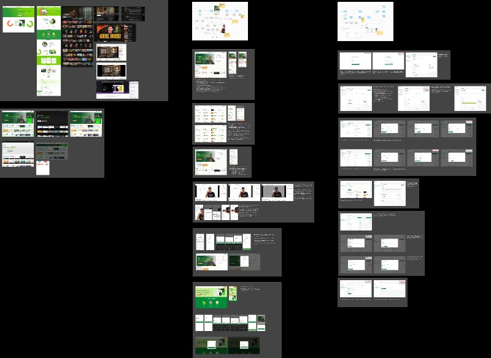

00 TL;DR
Um cliente me procurou querendo lançar uma plataforma própria de streaming, com catálogo, perfis de usuário e back-office para gerenciar conteúdo. Conduzi o projeto end-to-end: do entendimento do nicho e arquitetura de informação até as telas finais de catálogo, player, perfil e todo o painel administrativo.
01 Visão geral do projeto
O CocFlix é uma plataforma de streaming completa, com duas grandes camadas de produto:
- App do espectador: descoberta de conteúdo, catálogo navegável por categorias, página de detalhe do título, player e perfis personalizados.
- Painel administrativo (CMS): gestão de catálogo, curadoria de destaques, gerenciamento de usuários e relatórios internos. Pensado pra operar a plataforma sem dependência de dev pra tarefas do dia a dia.

Visão geral do arquivo Figma com as principais telas e fluxos do produto.
02 Contexto do projeto
Esse foi um trabalho freelance que conduzi fora do meu dia a dia como PO/Designer no Sexlog. O cliente tinha a ambição de lançar um produto de streaming próprio e precisava de alguém que entregasse tanto a experiência do usuário final quanto a ferramenta de operação por trás, sem precisar contratar dois especialistas.
O escopo final do meu trabalho incluiu:
- Discovery e alinhamento de visão com o cliente
- Arquitetura de informação do catálogo
- Desenho dos fluxos de descoberta e consumo
- Telas do app do espectador (home, categorias, detalhe, player, perfil)
- Telas do painel administrativo (CMS de conteúdo e gestão de usuários)
- Definição de identidade visual e design system básico
03 A dor que o produto endereça
Lançar uma plataforma de streaming exige resolver dois problemas ao mesmo tempo: fazer com que o espectador encontre conteúdo rapidamente e permitir que o time interno gerencie a biblioteca sem fricção. Quando essas duas camadas não conversam, o produto trava: ou o catálogo vira uma bagunça, ou a curadoria não consegue acompanhar o ritmo do conteúdo.
O cliente já tinha tentado soluções genéricas (templates de marketplace, plugins de WordPress) e nenhuma deu conta da complexidade real do uso diário. A oportunidade era construir algo desenhado especificamente pra esse caso, com decisões de produto baseadas no que o operador realmente precisa fazer.
04 Processo de discovery
Antes de qualquer tela, dediquei tempo a entender as duas pontas:
- Conversa com o cliente: entendi o público alvo, o tipo de conteúdo que ia rodar, frequência de atualização do catálogo e como ele imaginava monetizar.
- Mapeamento da operação: simulei o dia a dia de quem opera o catálogo (cadastro de título, categorização, destaques, publicação) pra desenhar um CMS que combinasse com o ritmo real.
- Benchmark de plataformas: analisei Netflix, Globoplay, Disney+ e outros players pra identificar padrões de descoberta de conteúdo que os usuários já esperam.
- Definição de prioridades: fechei com o cliente quais fluxos eram obrigatórios no MVP e quais entrariam em fases seguintes.
05 Solução desenhada
A plataforma foi estruturada em dois grandes módulos conectados pela mesma base de conteúdo:
App do espectador
Foco em descoberta passiva: o usuário entra e o produto já entrega contexto. Home com carrosséis temáticos, página de título com sinopse e ações claras (assistir, salvar, compartilhar), perfis para múltiplos usuários no mesmo plano e busca rápida com sugestões.
Painel administrativo (CMS)
Foco em velocidade de operação: cadastro de título em poucos cliques, categorização múltipla, controle de destaques na home, gestão de usuários (planos, status, suporte) e relatórios para acompanhar o que está rodando bem.
06 Decisões de produto
- Tema escuro como padrão: coerente com o consumo de vídeo (ambiente que reduz cansaço visual) e alinhado com a expectativa do usuário em apps de streaming.
- Catálogo orientado por carrosséis horizontais: permite ao usuário escanear visualmente várias opções sem comprometer o foco, padrão consolidado pelos grandes players do mercado.
- CMS com mesma identidade do app: evitei a tentação de usar dashboards "padrão técnico". O painel admin compartilha o design system do produto principal, o que reduz a curva de aprendizado para a equipe interna.
- Curadoria como ação de primeira classe: destacar um título na home é uma ação que o operador faz toda semana. Desenhei o fluxo de destaque pra ser feito em segundos, sem entrar em modal ou tela cheia.
07 O que esse projeto provou
- Capacidade de desenhar duas pontas conectadas (produto para usuário final e ferramenta interna) sem perder coerência entre as duas.
- Trabalhar com cliente externo, traduzindo ambição em escopo viável, priorizando o que entra no MVP e desenhando o produto pra ser entregue em fases.
- Aplicar padrões consolidados sem perder identidade própria, construindo algo familiar pro usuário mas único na execução.